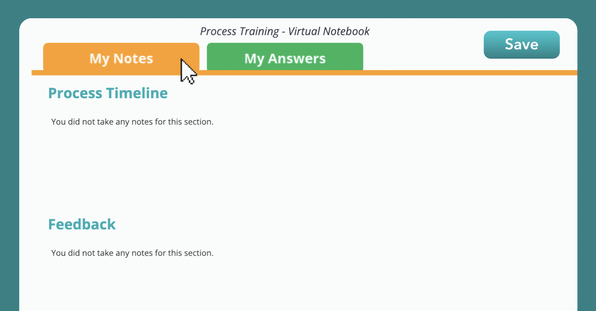
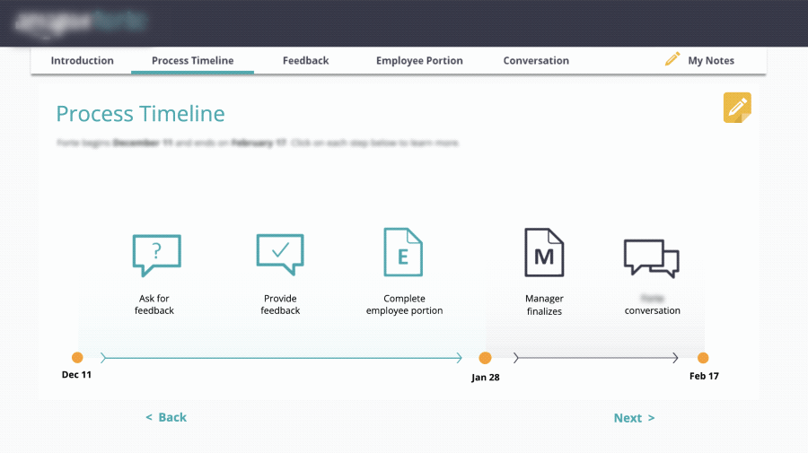
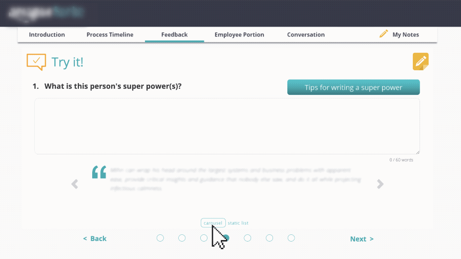
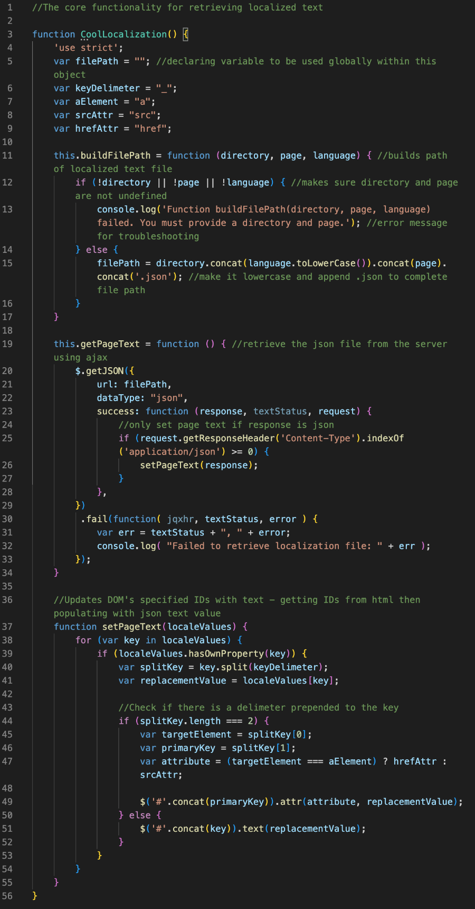
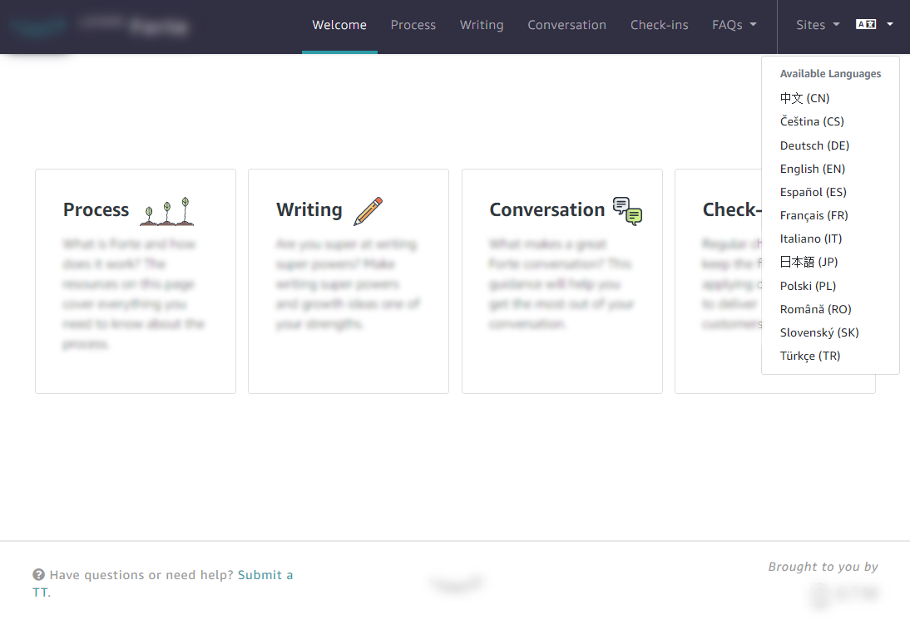
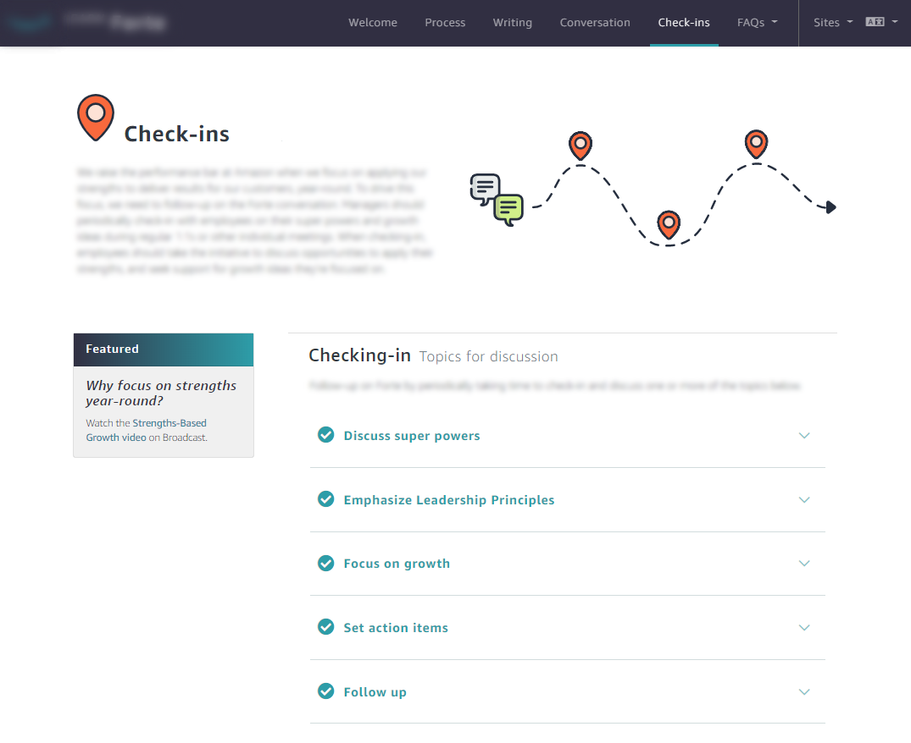

Strength-Based Growth
When Amazon designed a new annual review process focusing on strengths-based growth, I created the training and resources to support. This unique-to-Amazon process asks employees to exchange feedback in the form of “super powers” — a novel approach to feedback that called for change management and adoption campaigns in addition to a suite of training resources.
I owned this training for several years, so there were multiple iterations as our team gathered feedback and improved designs. Eventually, this guidance was embedded within the process tool itself, right in the flow of work. If you're interested in hearing more about that evolution, please feel free to reach out!
Below are samples of just a few of the many assets I created.
Process Video
To introduce the process and get employees excited to participate, I created a short animated video (part promo, part explainer). After working closely with the program's design team, I wrote the script, storyboarded, animated, and narrated this video. I can't show the full version, but here's a clip to give you an idea.
Made with Photoshop and CamtasiaProcess eLearning
For new employees, I created a short elearning to explain the process and give an opportunity to practice. Any answers provided are automatically saved to a "virtual notebook", along with any notes employees may choose to take. At the end of the module, they have the option to email or print their notes for future reference. This feature also serves as a way for employees to complete a portion of the process as part of the training.
Made with Lectora and custom HTML


Resource Website
To house all available resources related to the process, I created a custom website for employees to browse as needed. Fully responsive and accessible, the website offers a dynamic translation feature based on user selection out of 12 languages. This allows a single website to serve Amazon's global employee population. A better user experience and much easier for the learning team to manage!
Made with Bootstrap, custom HTML, CSS, and JavaScript


